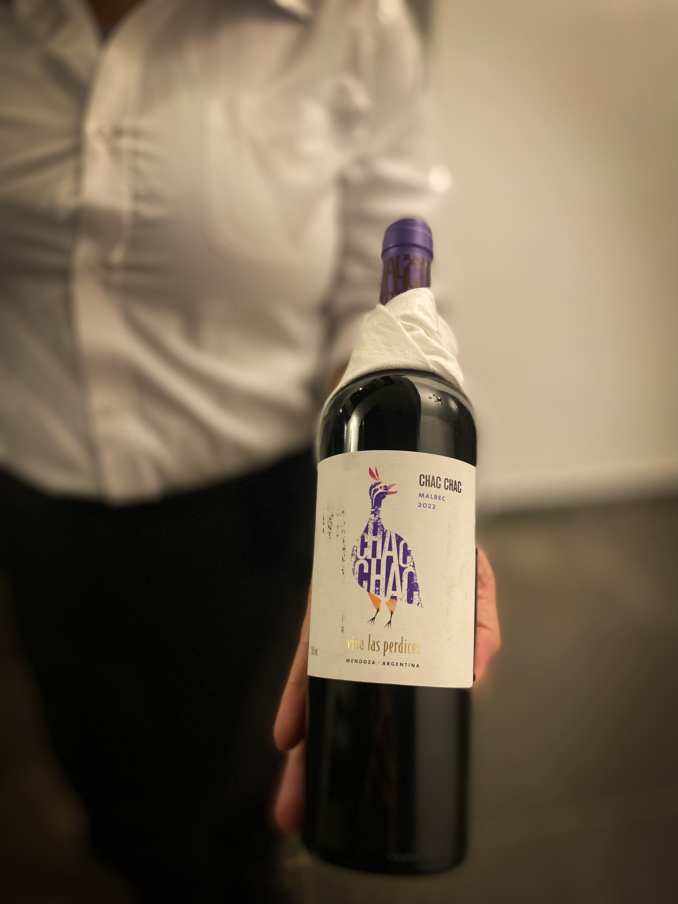
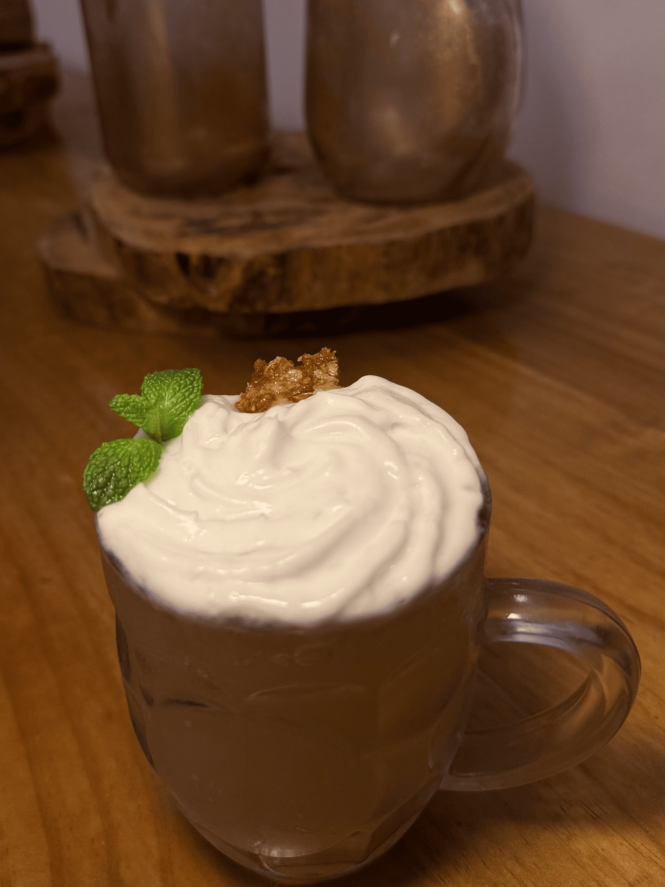
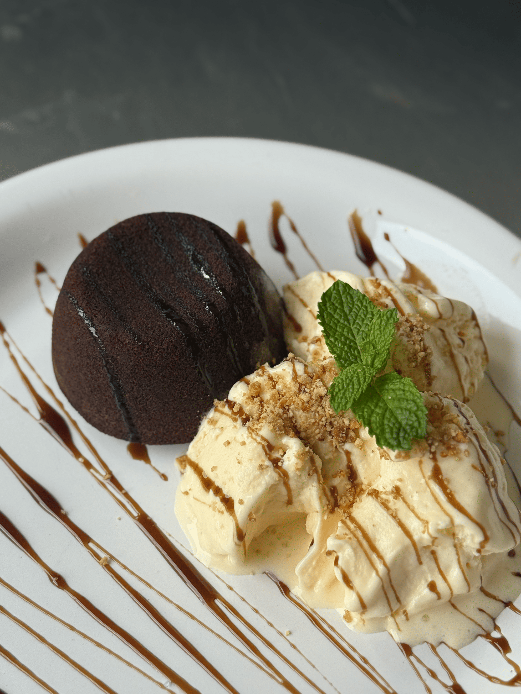
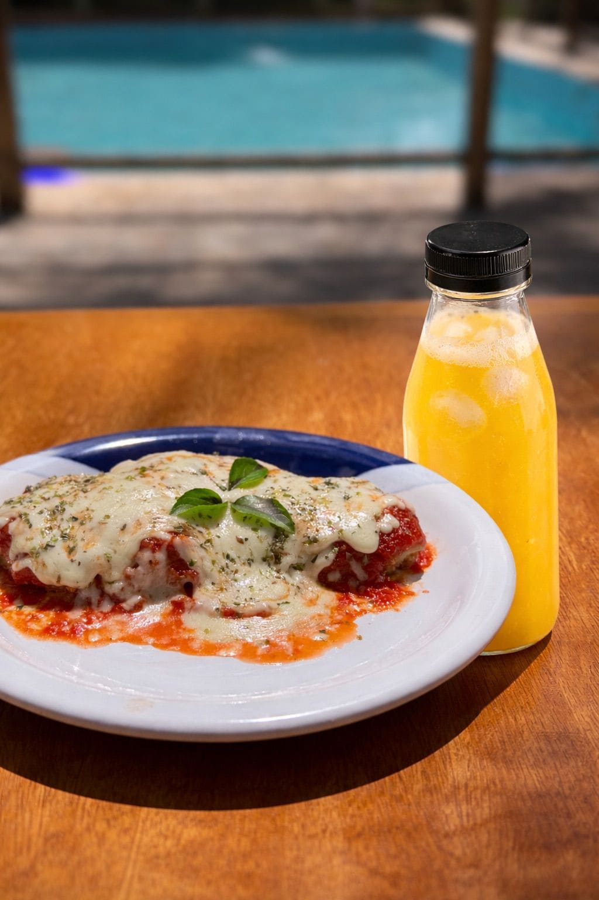
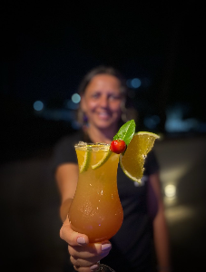

Momentos
A energia do Kasarão em fotos e vídeos — drinks autorais, noites marcantes e um ambiente sofisticado.



Momentos ao Vivo
Um pouco da vibe do Kasarão.
Experiência
Detalhes que fazem a diferença.
Noite no Kasarão
Música, energia e brinde.





Ambiente
Atmosfera envolvente e sofisticada.
Brinde
Porque o momento merece.



Dica: arraste no celular ou use as setas do teclado.